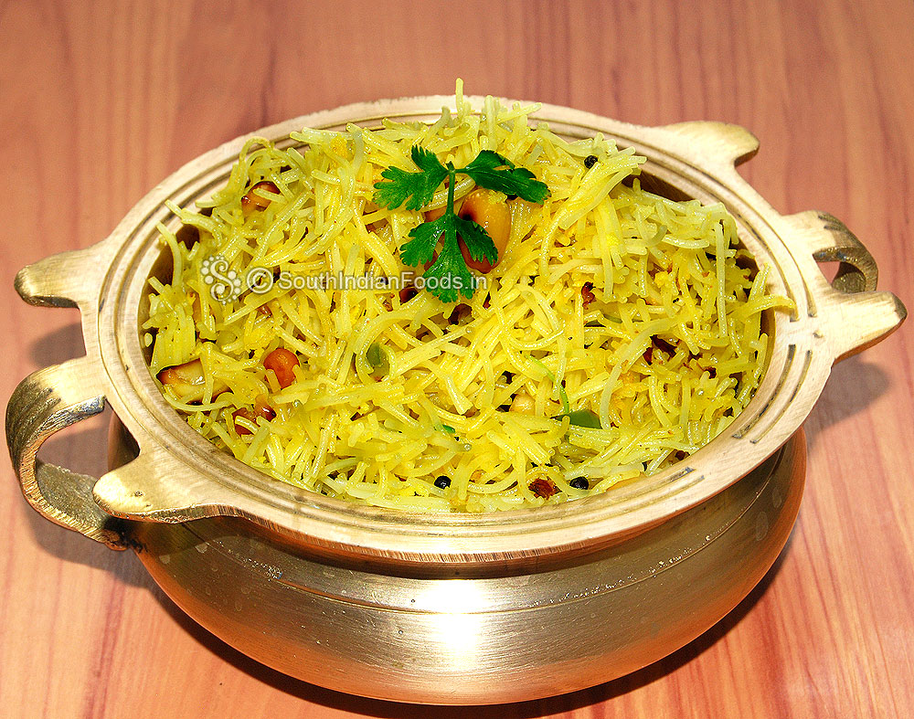

Shavige Uppitt Recipe

Ingredients for boiling:
- 4 cup water
- 1 tsp oil
- ½ tsp salt
- 2 cup (100 gram) rice vermicelli / akki shavige
Ingredients for tempering:
- 2 tbsp oil
- 2 tbsp peanuts
- 2 tbsp cashew / kaju
- 1 tsp mustard
- 1 tsp chana dal
- 1 tsp urad dal
- 1 dried red chilli, broken
- few curry leaves
- 1 inch ginger, finely chopped
- 2 chilli, finely chopped
- 1 onion, finely chopped
- ¼ tsp turmeric
- ½ tsp salt
- 1 tbsp lemon juice
- 2 tbsp coriander, finely chopped
Instructions
LET'S MAKE THE DOUGH:
- Firstly, in a saucepan boil 4 cup water, 1 tsp oil and ½ tsp salt.
- Once the water comes to a boil add in 2 cup rice vermicelli.
- Boil for 2 minutes, making sure it is cooked well.
- Drain off the vermicelli and cool completely.
- In a large kadai heat 2 tbsp oil and roast 2 tbsp peanuts until it turns crunchy.
- Also, roast 2 tbsp cashew until it turns golden brown.
- Keep the roasted cashew and peanuts aside.
- In the same oil splutter 1 tsp mustard, 1 tsp chana dal, 1 tsp urad dal, 1 dried red chilli and few curry leaves.
- Now add 1 inch ginger, 2 chilli and saute slightly.
- Further, add 1 onion and saute until it softens well.
- Also, add ¼ tsp turmeric and ½ tsp salt. saute until it turns aromatic.
- Now add in boiled vermicelli and mix gently.
- Cover and simmer for 2 minutes or until flavours are absorbed.
- Add in 1 tbsp lemon juice and 2 tbsp coriander. mix well.
- Finally, enjoy shavige uppittu with chutney or as it is.